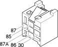

J45 Dipped beam maintenance relay ( FACIA )
- Path
- Electrical equipment > Connectors > J Relays > J45 Dipped beam maintenance relay > J45 Dipped beam maintenance relay ( FACIA )
- Kind
- connector pinout (pin -> wire colour -> other end)
- Applies to
- engines: 1.6 TS , 1.8 TS, 2.0 JTS, 2.5 V6, 3.2 V6, 1.9 JTD 8v , 1.9 JTD 16v, 2.0 JTS, 2.4 JTD 10v, 2.4 JTD 20v; production: da 03/02 a 09/03, da 10/03
- Interactive page
- https://sloeber94.github.io/elrnDB-a156/en/#/3236428
Applies to: engines: 1.6 TS , 1.8 TS, 2.0 JTS, 2.5 V6, 3.2 V6, 1.9 JTD 8v , 1.9 JTD 16v, 2.0 JTS, 2.4 JTD 10v, 2.4 JTD 20v; production: da 03/02 a 09/03, da 10/03

Wiring | Colour |
|---|---|